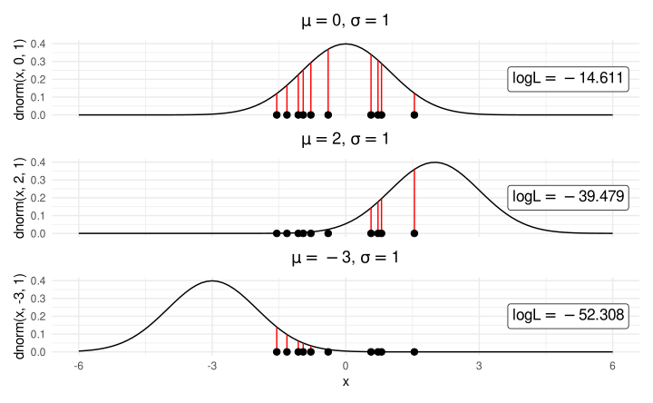
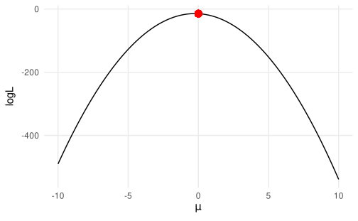
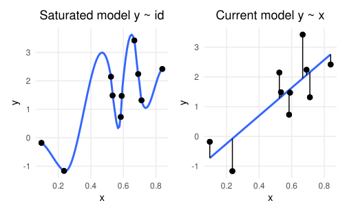
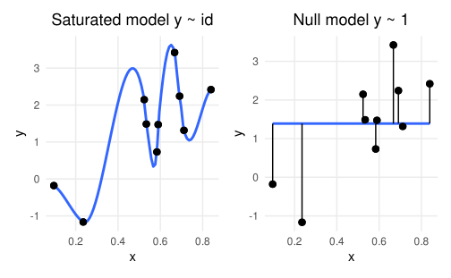
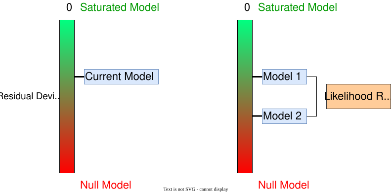
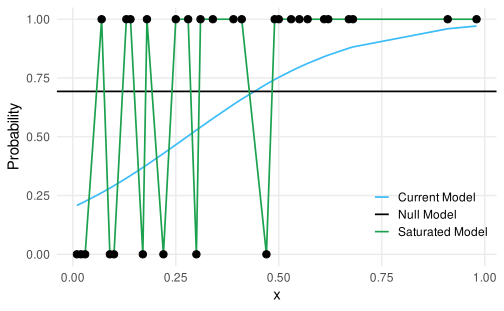

x<-rnorm(10)# data from normal distribution# datax#> [1] -1.3212882 0.7246339 -1.0663206 -0.9561050 -0.3952596 0.8037211#> [7] -0.7839550 -1.5499343 0.5683434 1.5421302# the model is a normal distribution with mu = 0 and sd = 1dnorm(x, 0, 1)#> [1] 0.1666533 0.3068226 0.2259462 0.2525851 0.3689650 0.2888284 0.2933962#> [8] 0.1200212 0.3394442 0.1214781# log likelihoodsum(log(dnorm(x, 0, 1)))#> [1] -14.61055
Likelihood
By summing the logarithm all the red segments we obtain the log likelihood of the model given the observed data.

Likelihood
In the previous slide we tried only 3 values for the mean. Let’s image to calculate the log likelihood for several different means. The parameter with that is associated with highest likelihood is called the maximum likelihood estimator. In fact, the \(\mu = 0\) is associated with the highest likelihood.

Deviance
The (residual) deviance in the context of GLM can be considered as the distance between the current model and a perfect model (often called saturated model).
Where \(\mathcal{L}\) is the likelihood of the considered model (see the previous slides). Clearly, the lower the deviance, the closer the current model to the perfect model suggesting a good fit.
Deviance - Saturated model
The saturated model is a model where each observation \(x_i\) has a parameter.

Deviance - Null model
Another important quantity is the null deviance that is expressed as the distance between the null model and the saturated model.
The null deviance can be interpreted as the maximal deviance because is estimated using a model without predictors. A good model will have a residual deviance lower than the null model.
Deviance - Null model

Inference
Wald tests
The basic approach when doing inference with GLM is interpreting the Wald test of each model coefficient. The Wald test is calculated as follows:
\[
z = \frac{\beta_{p'} - \beta_0}{\sigma_{\beta_{p'}}}
\]
Where \(\beta_{p'}\) is the regression coefficients, \(\beta^0\) is the value under the null hypothesis (generally 0) and \(\sigma_{\beta_{p'}}\) is the standard error. P-values and confidence intervals can be calculated based on a standard normal distribution.
Wald-type confidence intervals
Wald-type confidence interval (directly from model summary), where \(\Phi\) is the cumulative Gaussian function qnorm():
When calculating confidence intervals it is important to consider the link function. In the same way as we compute the inverse logit function on the parameter value, we could revert also the confidence intervals. IMPORTANT, do not apply the inverse logit on the standard error and then compute the confidence interval.
# nice way to extract model coefficientsfits<-broom::tidy(fit_teddy)b<-fits$estimate[2]# slopese<-fits$std.error[2]# standard error# correct, wald-type confidence intervalsc(b =exp(b), lower =exp(b-2*se), upper =exp(b+2*se))
With multiple predictors, especially with categorical variables with more than 2 levels, we can compute the an anova-like analysis individuating the effect of each predictor. In R we can do this using the car::Anova() function. Let’s add more predictors with the teddy dataset. This is the maximal models with all predictors and interactions.
#>
#> Call:
#> glm(formula = Depression_pp01 ~ Education + Parental_stress +
#> Education:Parental_stress, family = binomial(link = "logit"),
#> data = teddy)
#>
#> Coefficients:
#> Estimate Std. Error z value Pr(>|z|)
#> (Intercept) -5.29322 1.12535 -4.704 2.56e-06 ***
#> EducationHigh school 1.51796 1.48932 1.019 0.30810
#> EducationMiddle school 1.46690 2.73684 0.536 0.59197
#> Parental_stress 0.05037 0.01571 3.207 0.00134 **
#> EducationHigh school:Parental_stress -0.02163 0.02119 -1.020 0.30751
#> EducationMiddle school:Parental_stress -0.03094 0.03751 -0.825 0.40946
#> ---
#> Signif. codes: 0 '***' 0.001 '**' 0.01 '*' 0.05 '.' 0.1 ' ' 1
#>
#> (Dispersion parameter for binomial family taken to be 1)
#>
#> Null deviance: 284.13 on 378 degrees of freedom
#> Residual deviance: 268.75 on 373 degrees of freedom
#> AIC: 280.75
#>
#> Number of Fisher Scoring iterations: 5
Then using car::Anova(). For each effect we have the \(\chi^2\) statistics and the associated p-value. The null hypothesis is that the specific factor did not contribute in reducing the residual deviance.
#> # A tibble: 2 × 5
#> `Resid. Df` `Resid. Dev` Df Deviance `Pr(>Chi)`
#> <dbl> <dbl> <dbl> <dbl> <dbl>
#> 1 49 59.3 NA NA NA
#> 2 48 31.6 1 27.7 0.000000142
Notice that the difference between the two residual deviances is the test statistics that is distributed as a \(\chi^2\) with \(df = 1\).
Deviance - Likelihood Ratio Test

Deviance1

Deviance - Example
Let’s fit the three models:
# nullfit0<-glm(exam~1, data =dat, family =binomial(link ="logit"))# currentfit<-glm(exam~tv_shows, data =dat, family =binomial(link ="logit"))# saturatedfits<-glm(exam~0+id, data =dat, family =binomial(link ="logit"))
The table obtained with car::Anova() is essentially a model comparison using the Likelihood Ratio Test. This can be done using the anova(...) function.
\[
\begin{align*}
D = 2 (log(\mathcal{L}_{full}) - log(\mathcal{L}_{reduced})) \\
D \sim \chi^2_{df_{full} - df_{reduced}}
\end{align*}
\]
Model comparison
To better understanding, the Education effect reported in the car::Anova() table is a model comparison between a model with y ~ Education + Parental_stress and a model without Education. The difference between these two model is the unique contribution of Education after controlling for Parental_stress:
fit<-glm(Depression_pp01~Education+Parental_stress, family =binomial(link ="logit"), data =teddy)fit0<-glm(Depression_pp01~Education, data =teddy, family =binomial(link ="logit"))anova(fit0, fit, test ="LRT")# ~ same as car::Anova(fit_max)
#> # A tibble: 2 × 5
#> `Resid. Df` `Resid. Dev` Df Deviance `Pr(>Chi)`
#> <dbl> <dbl> <dbl> <dbl> <dbl>
#> 1 376 283. NA NA NA
#> 2 375 270. 1 13.3 0.000272
The model comparison using anova() (i.e., likelihood ratio tests) is limited to nested models thus models that differs only for one term. For example:
fit1<-glm(Depression_pp01~Education, family =binomial(link ="logit"), data =teddy)fit2<-glm(Depression_pp01~Parental_stress, family =binomial(link ="logit"), data =teddy)fit3<-glm(Depression_pp01~Education+Parental_stress, family =binomial(link ="logit"), data =teddy)
fit1 and fit2 are non-nested because we have the same number of predictors (thus degrees of freedom). fit3 and fit1/fit2 are nested because fit3 is more complex and removing one term we can obtain the less complex models.
Model comparison
anova(fit1, fit2, test ="LRT")# do not works properly
#> # A tibble: 2 × 5
#> `Resid. Df` `Resid. Dev` Df Deviance `Pr(>Chi)`
#> <dbl> <dbl> <dbl> <dbl> <dbl>
#> 1 376 283. NA NA NA
#> 2 377 271. -1 12.1 NA
anova(fit1, fit3, test ="LRT")# same anova(fit2, fit3)
#> # A tibble: 2 × 5
#> `Resid. Df` `Resid. Dev` Df Deviance `Pr(>Chi)`
#> <dbl> <dbl> <dbl> <dbl> <dbl>
#> 1 376 283. NA NA NA
#> 2 375 270. 1 13.3 0.000272
Information Criteria
As for standard linear models I can use the Akaike Information Criteria (AIC) or the Bayesian Information Criteria (BIC) to compare non-nested models. The downside is not having a properly hypothesis testing setup.
Everything can be simplified using some packages to perform each step and returning a plot:
allEffects() from the effects() package (return a base R plot)
ggeffect() from the ggeffect() package (return a ggplot2 object)
plot_model from the sjPlot package (similar to ggeffect())
Quick plots with allEffects()
effects::allEffects() provides quick but not very beautiful plots. They are also not very easy to customize, especially if you are familiar with ggplot2: